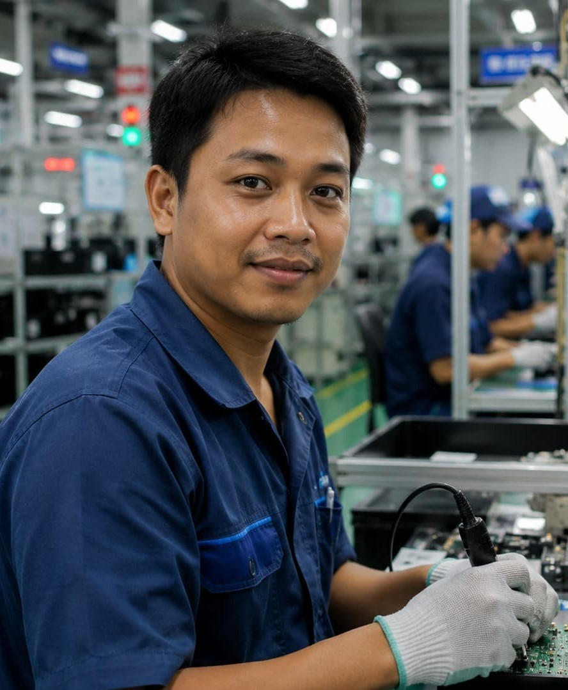

Lulusan SMA dengan pengalaman lebih dari 3 tahun di lini produksi kawasan industri, terbiasa bekerja dengan target dan standar mutu ketat, disiplin, dan siap bekerja dalam sistem shift.

Saya lulusan SMA Negeri 1 Cikarang Utara tahun 2021. Sejak lulus, saya bekerja sebagai operator produksi di kawasan industri MM2100, Cikarang, Bekasi. Saya terbiasa bekerja dengan mesin produksi otomatis, mengikuti SOP keselamatan kerja (K3), dan bekerja dalam tim untuk mencapai target produksi harian. Saya siap bekerja dalam sistem shift dan terbiasa dengan lingkungan kerja pabrik yang menuntut kedisiplinan tinggi.
Mengoperasikan mesin perakitan komponen elektronik pada lini produksi, melakukan quality check dasar, dan mencatat hasil produksi harian sesuai target.
Bertugas pada bagian finishing dan packing produk garmen, memastikan barang sesuai standar sebelum dikirim ke gudang.
Aktif di ekstrakurikuler Pramuka dan pernah menjadi ketua kelas selama dua tahun berturut-turut.